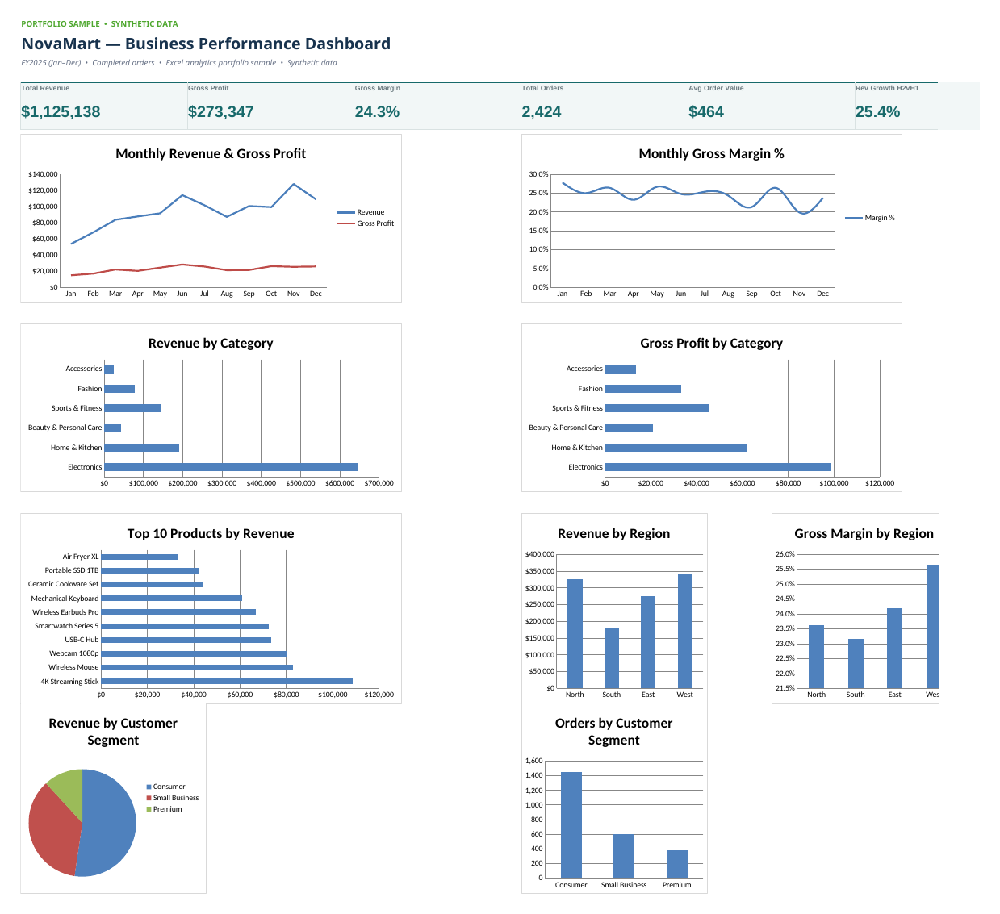
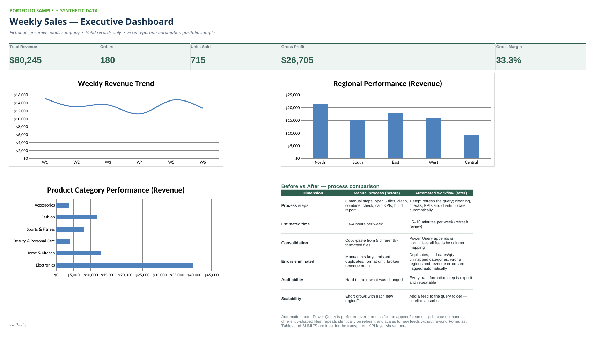
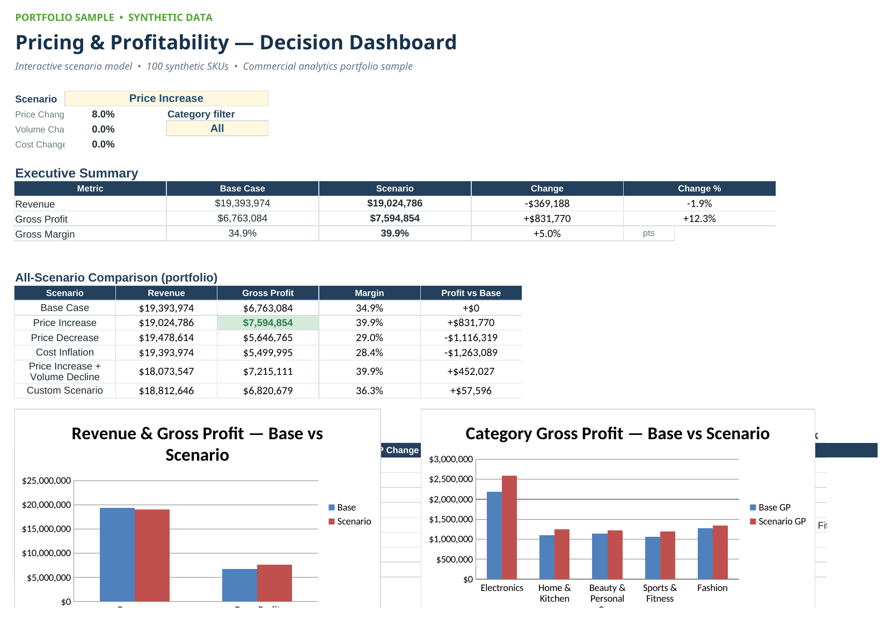

01
E-commerce Performance Dashboard
2,424 orders → one executive-ready view of where the money actually is.
- Excel
- Data analysis
- Dashboards
Business analytics · Commercial strategy · AI
I take messy business problems — the ambiguous questions, the five spreadsheets that don't match, the report someone rebuilds by hand every week — and turn them into something useful.
Yes — I built this site too. It was faster than explaining what I do.
A little demo, built from synthetic portfolio data. Click a tab.
From “why are we still doing this by hand?” to “wait, we could just automate that.” I like the unglamorous middle — where a messy question quietly becomes a useful thing.
01 Selected work
Each one is a portfolio case study built on synthetic data — problem, approach, output, and why a business would care. Hover to peek; open one to read the story.

2,424 orders → one executive-ready view of where the money actually is.

Five messy regional feeds → one report that rebuilds itself on refresh.

Makes a pricing trade-off visible before anyone commits to it.
Because sometimes the answer shouldn't live in a spreadsheet at all.
All four are fictional portfolio cases on synthetic data. Working files can be shared privately for genuine project conversations.
02 Playground
Portfolio demos on synthetic data — nothing here touches a real database.
Pick a scenario. Watch revenue, gross profit and margin move. Same numbers as the model in project 03.
03 Approach
A dashboard should answer a question — not just contain seventeen charts and hope one of them helps.
If I've done the same thing three times, I'm probably already thinking about how to make it a button.
Good visual design isn't decoration when it helps someone spot the answer a few seconds faster.
Sometimes that's Excel. Sometimes SQL. Sometimes a five-line prompt. The point is the decision, not the tool.
04 What I can help with
05 Toolkit
06 About
I work where analytics meets business problem-solving. At Bain & Company I support commercial analytics and AI-assisted workflow & product prototyping. Before that, at ZS Associates, I worked across decision analytics, reporting, automation and client-facing insight.
The problems I like best aren't really about charts. They're about a clearer process, a better decision, or a small tool that quietly removes an hour of someone's week — every week.
4+ years analytics · ∞ curiosity · 1 slightly unreasonable urge to automate things.
Let's talk
I'm open to analytics, reporting automation, commercial analysis and practical AI / product work.
KOMAL MODE
currently: analytics × AI × product thinking
Also: this website was probably unnecessary. But here we are.